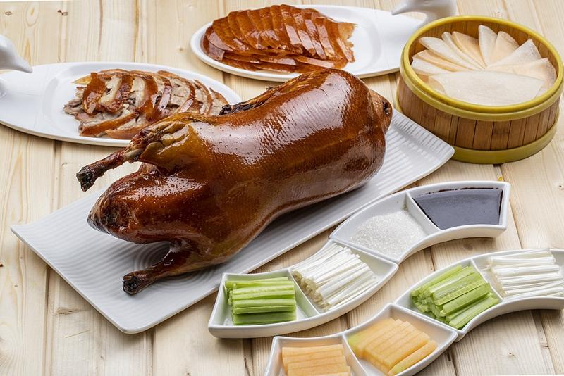
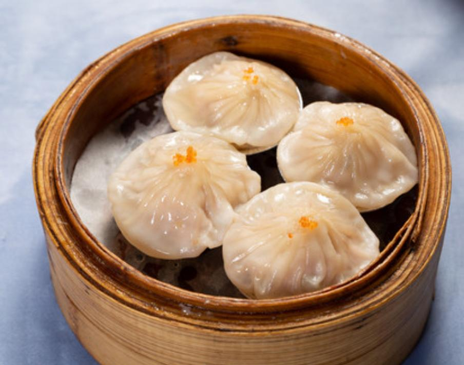
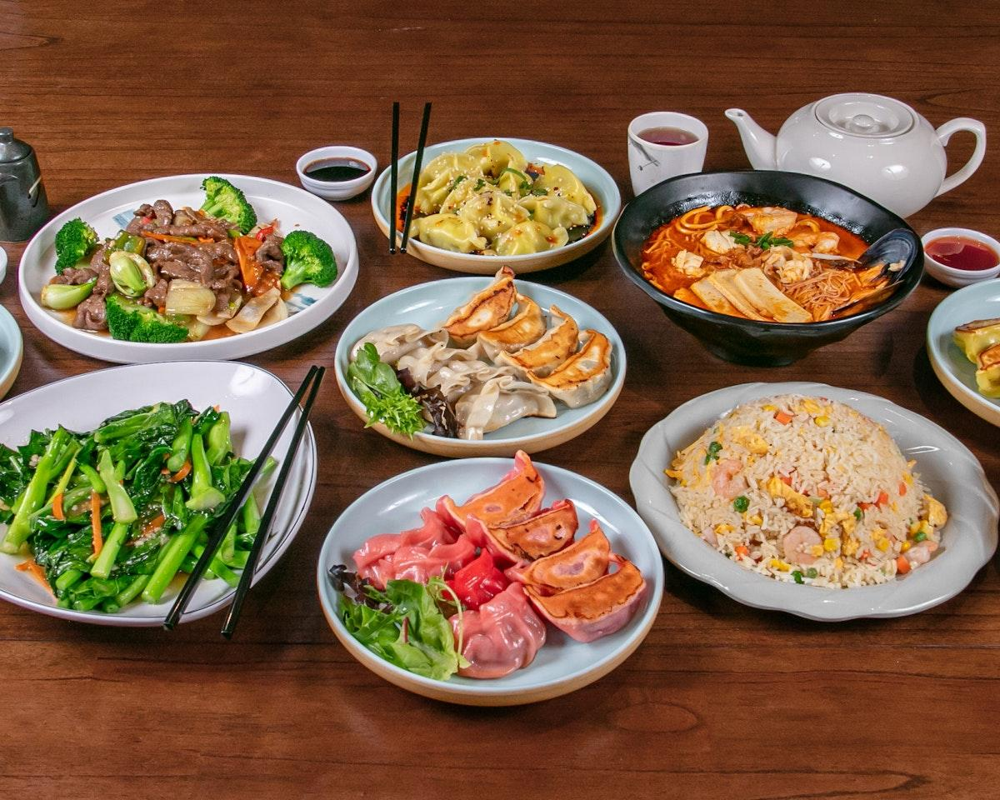

Pato à Pequim
O Pato à Pequim é um prato tradicional conhecido por sua pele crocante e apresentação especial. Geralmente é servido com panquecas finas, molho e acompanhamentos. É uma das receitas mais famosas da culinária de Pequim.
Descubra a China além das fronteiras.
A gastronomia chinesa é conhecida por sua diversidade de ingredientes, sabores e técnicas de preparo. Cada região possui especialidades próprias, tornando a culinária do país uma experiência cheia de descobertas.

O Pato à Pequim é um prato tradicional conhecido por sua pele crocante e apresentação especial. Geralmente é servido com panquecas finas, molho e acompanhamentos. É uma das receitas mais famosas da culinária de Pequim.

Os Jiaozi são pastéis tradicionais chineses preparados com uma massa fina e diferentes recheios. Podem ser cozidos, preparados no vapor ou dourados na frigideira. São muito populares durante o Ano-Novo Chinês.

O Chow Mein é um prato preparado com macarrão salteado, legumes e diferentes acompanhamentos. Sua combinação de ingredientes e temperos proporciona um sabor marcante e muito apreciado.